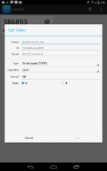

FreeOTP multi-factor authentication
Back in 2010, Google rolled out multi-factor authentication for its services using an open source project named Google Authenticator. The system generated one-time pad (OTP) passcodes on a mobile phone; users could log in to their favorite Google service with their usual password plus the passcode. In addition to its availability on Google servers, the open source project included a PAM module that Linux users could run on their own machines. Sadly, Google Authenticator fell victim to the gradual move toward proprietary code of recent "Google Play Services" releases and the open source version was discontinued, without fanfare, in 2013. Fortunately, the community has picked up the challenge and is developing a workalike called FreeOTP.
As we saw in our look at Google Authenticator, the system consisted of two halves: a mobile application and a server-side authentication plug-in. When provisioned with a key, the mobile app generated either HMAC-based OTP (HOTP) or Time-based OTP (TOTP) passcodes. Since HOTP and TOTP are both open IETF standards, the app could be used with any compliant server and supported storing multiple sets of credentials—the only prerequisite being that the phone would needed to be provisioned with the key for each service. The server-side tools included a key-generation program, and the project was popular enough that multiple third-party projects and web services deployed it.
The turn from free software to proprietary software came after the
2.21 release. The notice for the change was posted only as an update to
the Google Authenticator web page at Google Code, which was
highlighted in this
Reddit discussion from May 2013. The wording change noted simply
that the subsequent, closed-source versions of the app "contain Google-specific workflows
". FreeOTP was started in August
2013; although it includes bits of code from Google Authenticator, it
is predominantly a fresh rewrite—albeit one that does its best
to serve as a free-software clone of the original.
The new project is hosted at Fedorahosted.org, and is maintained by Red Hat's Nathaniel McCallum. On the mobile side of the equation, it replicates the Android and iOS client apps, but drops the Blackberry variant. As of right now, the iOS app has not yet been published on Apple's app store, but the Android version is available both through Google Play and through the free-software repository F-Droid.
On the server side, so far FreeOTP is not producing any components. Since any standards-compliant HOTP or TOTP server should work with FreeOTP, there is no absolute need for the project to produce its own server-side code. One of the nice things about Google Authenticator and FreeOTP, of course, is that the server and the client do not talk directly to each other: the client app generates the passcode, then the user types it in. Still, this does mean that the HOTP/TOTP Linux PAM module is now unmaintained. Although it is likely to work, that likelihood certainly comes with no guarantees—particularly since system security is at stake.
The FreeOTP project site points users to FreeIPA as a recommended solution. FreeIPA is an identity-management suite offered by Red Hat that glues together several existing open source components to provide LDAP, Kerberos, RADIUS, and other authentication or authorization services. McCallum, unsurprisingly, works on FreeIPA, and has added HOTP/TOTP support to MIT Kerberos. Work is also underway for a standalone HOTP/TOTP implementation in FreeIPA, though it is still under development.
Two-factorization
FreeOTP replicates the same general workflow used in Google Authenticator. The first step is to provision the device with the key necessary to generate the HOTP or TOTP passcodes. How this step is done varies depending on the service one is trying to connect to, but the simplest option (if available) is to photograph a QR code that is generated by the server; these QR codes encode the key as well as the metadata one needs to keep track of the account (e.g., the server and account username).
FreeOTP is not as visually polished, but it does score some points over Google Authenticator by including the ZXing QR code–reading library within the app; Google requires downloading and installing a ZXing app separately. For services that do not generate QR codes for key provisioning, FreeOTP allows the user to manually enter the key, the key's options (e.g., the hash algorithm used) and information for the issuing service.
Once provisioned, opening the app shows a list of the saved accounts, and opening each account reveals the current one-time pad passcode. TOTP, the time-based passcode variant, is designed so that the codes are only valid for a brief interval of time (say, 30 seconds). The FreeOTP interface displays a little clock animation next to each code showing how much time remains, and automatically updates to the next passcode after every elapsed interval.

In practice, TOTP seems to be considerably more widespread than HOTP, presumably because HOTP seeds each passcode-generation run with a counter, rather than the current time, which in turn makes the resulting passcode valid for an indefinite length of time. This is of concern for Google Authenticator and FreeOTP because passcodes generated on phones can be compromised—a passcode with an indefinite lifetime allows more attack vectors than one that expires (for example, by jotting down the code and leaving, instead of stealing the phone).
But that is not the whole story; using one's Android phone as if it is a hardware crypto-token is a bit of a fudge regardless of the passcode-generation technique. In reality, since a phone can easily be lost or stolen, the only protection against the attacker using it to take over one's HOTP/TOTP online accounts is securing the phone's contents itself: password-protection, encrypted storage, and so on. What percentage of phone users actually take advantage of these options is anyone's guess.
For those who are concerned about the security of the device itself, it is worth noting that neither the Google Authenticator nor FreeOTP apps are password-protected. In an email, McCallum did mention that encrypted key storage is on the to-do list, but that other items (such as getting the iOS app released) have taken precedence for now.
On the other hand, many (or perhaps most) security schemes can lead into a "the perfect is the enemy of the good" cycle of disagreement that has no simple answer. Usage of two-factor authentication, even if the second "factor" is a software-generated passcode on a phone that could get stolen, is an improvement over user passwords alone. Similarly, while FreeOTP does not offer an expanded feature set over Google Authenticator, the fact that it is open source and thus auditable makes it a better option in absolute terms.
The shift of Google Authenticator to a proprietary app was certainly a step
backward for the security-conscious, so it is good to see an open-source alternative arrive with feature parity. Of course, the mobile
apps only cover one half of the problem; there is more work that
remains to be done implementing multi-factor authentication on
applications and servers.
| Index entries for this article | |
|---|---|
| Security | Authentication |
Posted Jan 23, 2014 3:14 UTC (Thu)
by mathstuf (subscriber, #69389)
[Link] (5 responses)
Posted Jan 23, 2014 8:44 UTC (Thu)
by hawk (subscriber, #3195)
[Link] (4 responses)
Posted Jan 23, 2014 8:49 UTC (Thu)
by djc (subscriber, #56880)
[Link] (3 responses)
Transitioning Google 2FA to a new(ly installed) device has always been a bit of a PITA, so it'd be nice not to go through that again.
On the other hand, since I have the secret for my Persona IdP (https://bitbucket.org/djc/persona-totp) readily, available, I could easily enter that. FreeOTP (for Android) looks pretty good!
Posted Jan 23, 2014 11:52 UTC (Thu)
by hawk (subscriber, #3195)
[Link] (2 responses)
(Essentially getting your hands on the file /data/data/com.google.android.apps.authenticator2/databases/databases in one way or another and then opening that with sqlite3.)
Posted Jan 23, 2014 15:23 UTC (Thu)
by mathstuf (subscriber, #69389)
[Link] (1 responses)
Posted Jan 27, 2014 11:17 UTC (Mon)
by robbe (guest, #16131)
[Link]
That said, rooting a device on first arrival should really enter our minds as an issue of routine personal hygiene. You do wash newly-bought clothes before wearing them, do you?
Posted Jan 23, 2014 18:29 UTC (Thu)
by npmccallum (guest, #88808)
[Link]
Everyone, we welcome your testing, ideas, code and reviews! Please let us know if you experience any bugs and we will attempt to resolve them quickly.
Posted Jan 25, 2014 1:29 UTC (Sat)
by Kamilion (subscriber, #42576)
[Link] (1 responses)
I just signed up for coinbase recently, and ran across (read, was forced to download):
Which also seems to be a HOTP/TOTP android generator. From the little I've played with it, it seems to be HOTP using your mobile number as the HMAC input, but to be honest, I've only launched the app twice in two months.
However, they also suggested that you can migrate to it from google authenticator.
They seem to have a github here:
But no sign of the serverside, just some API wrappers for various languages.
This one in specific seemed a little worrisome to me:
I think I'll stick with my yubikey.
Posted Jan 27, 2014 11:21 UTC (Mon)
by robbe (guest, #16131)
[Link]
That would be highly insecure! Everybody knowing your seed can impersonate you. That would be all your contacts in this case.
Posted Jan 27, 2014 11:27 UTC (Mon)
by robbe (guest, #16131)
[Link] (1 responses)
I thought we were largely against this kind of thing in these parts?
> Google requires downloading and installing a ZXing app separately.
Seems like the Right Thing to me. Once you have ZXing installed, you can also use it for other scanning needs. The bundled library does not give you that functioniality.
The apps that I saw, that needed ZXing were very polite and offered a streamlined process for download&install. The code that pops this up is actually part of the ZXing SDK, so I guess most apps would work in a similar way.
Posted Feb 15, 2014 14:34 UTC (Sat)
by mp (subscriber, #5615)
[Link]
Posted Jan 27, 2014 11:38 UTC (Mon)
by robbe (guest, #16131)
[Link] (8 responses)
Arguably a hardware dongle is more easily stolen, because people will notice a missing phone much faster.
It's not the physical attacks I worry about. It's mobile malware exfiltrating this data.
Footnote:
Posted Jan 27, 2014 19:47 UTC (Mon)
by dlang (guest, #313)
[Link] (7 responses)
exactly, if you have a pin/password protecting your secret key, and the software on the device can tell if you gave it the correct thing, then the bad guy can get a copy of your app data (by doing a backup of your device, breaking into your online backup, mobile malware, etc) and then load the software on their own device (or simulator) and brute force the password. lockouts/etc won't help because they can just restore from backup again and keep trying.
hardware devices can't be cloned like this.
Posted Jan 27, 2014 20:00 UTC (Mon)
by raven667 (subscriber, #5198)
[Link] (6 responses)
You have to figure out what level of risk you are comfortable with given the sensitivity of the data. Even for banking soft-tokens might be perfectly fine (it may be possible to reverse fraudulent bank transfers sometimes, for example), maybe hard-tokens are only really needed when immediate loss of life or limb is a direct consequence of an authentication failure.
Posted Jan 27, 2014 23:28 UTC (Mon)
by dlang (guest, #313)
[Link] (5 responses)
Posted Jan 28, 2014 15:20 UTC (Tue)
by robbe (guest, #16131)
[Link] (4 responses)
Both this and your scheme have the problem that an attacker that has gained access to the seed, and therefore can generate tokencodes, is able to compute the password (RSA method) or the password hash (your method) from a sniffed OTP.
Using HMAC(password, tokencode) as the OTP instead should make it much harder to compute the password. -- you need a preimage attack.
Posted Jan 29, 2014 1:21 UTC (Wed)
by dlang (guest, #313)
[Link] (3 responses)
If someone has control of the mobile device, they can capture the keystrokes and have full access no matter what you use. That's not the threat I'm trying to defend against. I'm trying to defend against the attacker getting a clone of your device and then being able to brute-force against that clone image.
to restate what I'm suggesting
the secret is stored on your mobile device, it gets XORd with a hash of the password you type in, that secret is then used to compute whatever you exchange with the server. If the password you type is wrong, the exchange with the server will not compute correctly.
Posted Jan 29, 2014 5:22 UTC (Wed)
by raven667 (subscriber, #5198)
[Link] (2 responses)
This attack depends on seeing the plaintext of the auth, so would be mitigated by transport security (SSL). Of course it is moot if the vantage point for sniffing is the mobile device which we have presumed to be compromised to get the soft token seed in the first place, we just have o grab the pin when it is next used and save it along with the captured seed value.
Posted Jan 29, 2014 7:09 UTC (Wed)
by dlang (guest, #313)
[Link] (1 responses)
1. usually the secret is not sent over the network, it's used to calculate something else.
for example, in an SSL negotiation, there is a random secret picked by each side that the key material is used on.
the attacker would not only need the secret as stored on disk, and the data sent over the network, they would also need the random number generated for the session as well.
which leads to
2. this is not a defence against an attacker who's in control of your mobile device, this is an defence against an attacker who get access to a backup of your mobile device.
if you have an iDevice, this could be getting your backup from iTunes. If you backup your Android to your desktop, this is about someone getting access to your desktop (or it's backups).
Even if there is some ability to brute force they password from the XORd material on 'disk' and what's sent over the network, it's still an improvement from the default where the client checks the password, because that only needs the attacker to get a copy of the material stored on 'disk'
Posted Jan 31, 2014 14:53 UTC (Fri)
by robbe (guest, #16131)
[Link]
I'll try to be a bit mor formal In all OTP schemes the server and client both know a client-specific SEED. SECRET (if used) is known to user and server. PASSWORD (if used) is known to user and client.
* The most naive scheme 1 is:
An attacker that can steal SEED from the client device or a backup can break this.
* Scheme 2:
To break this, an attacker needs access to the SEED, as above, and in addition needs to sniff at least one authentication (to get access to the static SECRET).
* Scheme 3:
Access to a data-at-rest copy now only gets the attacker e(SEED). To get at the real SEED she either needs to be able to control the client during authentication (to key-log PASSWORD, or just read the cleartext SEED from memory).
* Scheme 4:
If f(a, b) := a XOR b this corresponds to your scheme, how I understood it.
For an attacker, this is very similar to scheme 2. He needs access to the SEED, e.g. via a backup, and to sniff one authentication.
* Scheme 5 (my proposal)
Looks like 4, but this time g is a trapdoor function (e.g. SHA512). An attacker now has the same requirements as in scheme 3 -- access to the backup and sniffing a connection will not be enough.
In conclusion, I don't think your scheme is more secure than simply concatenating a static SECRET to the OTP (scheme 2) and less secure than schemes 3 or 5.
Posted Jan 30, 2014 14:43 UTC (Thu)
by kraftcheck (guest, #35072)
[Link]
b) A one time pad is an encryption mechanism, not an authentication mechanism, and
c) If the only secret that is shared is a hash, then the underlying mechanism most certainly is not a one time pad.
FreeOTP multi-factor authentication
FreeOTP multi-factor authentication
FreeOTP multi-factor authentication
FreeOTP multi-factor authentication
FreeOTP multi-factor authentication
FreeOTP multi-factor authentication
FreeOTP multi-factor authentication
FreeOTP multi-factor authentication
https://www.authy.com/
https://github.com/authy
https://github.com/authy/authy-ssh
Authy
> number as the HMAC input, [...]
ye olde library bundling
> the ZXing QR code–reading library within the app;
ye olde library bundling
Soft-tokens
> hardware crypto-token is a bit of a fudge regardless of the passcode-
> generation technique.
Security issues be damned, it's a trend that is not limited to the free offerings. Organisations using the market leader in this segment increasingly rely on these so-called soft-tokens as well¹. Users just don't see the need to carry another device, when they already have their smartphone on hand at all times.
¹ Which I also see as a big problem for said vendor. Once all your users use soft-tokens, there's no need to stay with the proprietary solution.
Soft-tokens
Soft-tokens
Soft-tokens
Soft-tokens
Soft-tokens
Soft-tokens
Soft-tokens
Soft-tokens
I was specifically NOT contesting that.
Client sends h(TIME, SEED) to the server to authenticate. h is a cryptographically secure hash.
User types in SECRET, then the client sends (h(TIME, SEED), SECRET) to the server.
User authenticates to client with PASSWORD. This unlocks access to the encrypted SEED so that client can send h(TIME, SEED) to the server.
User types in SECRET, then the client sends f(h(TIME, SEED), SECRET) to the server.
RSA has f(a, b) := (a + b) mod x with some known x.
User types in SECRET, then the client sends g(h(TIME, SEED), SECRET) to the server.
OTP is One Time Passcode, not One Time Pad
a) OTP is an abbreviation of "one time passcode", not "one time pad",